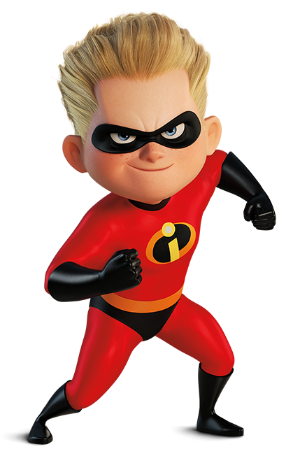

Dash es uno de los personajes principales de la película ya que es el hijo menor de elastic girl y mr.increible. Él, al igual que sus padres tiene super poderes, en su caso es la rapidez, gracias a esto toma el nombre de Dash, es decir que corre muy rapido. Como se puede ver en la imagen de abajo, tiene pelo y ojos claros, tiene pecas y gracias a su poder es considerado uno de los mejores deportistas de la escuela.
